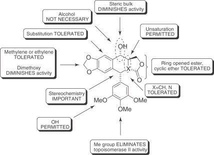
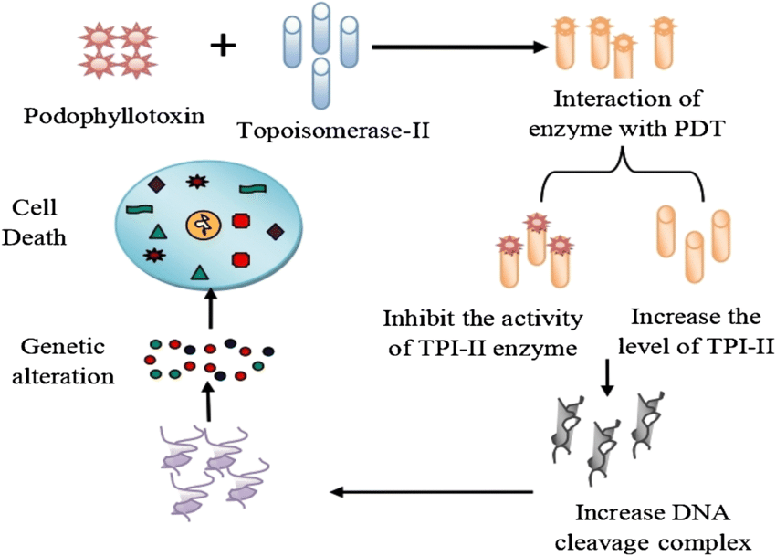

Podophyllotoxins :
Podophyllotoxin (PPT) is the active ingredient in Podofilox, which is a medical cream that is
used to treat genital warts and molluscum contagiosum.It is not recommended in HPV infections without
external warts. It can be applied either by a healthcare provider or the person themselves.
It is a non-alkaloid toxin lignin extracted from the roots and rhizomes of Podophyllum species.A less
refined form known as podophyllum resin is also available, but has greater side effects.
- Origin
Podophyllum peltatum, Podophyllum emodi
Podophyllum versipelle, Linum
Juniperus
- Structure-Activity Relationship (SAR)

- Mechanism Of Action
Podophyllotoxin destabilizes microtubules by binding tubulin and thus preventing cell
division. In contrast, some of its derivatives display binding activity to the enzyme topoisomerase II (Topo
II) during the late S and early G2 stage.

- Cell Line
small-cell lung cancer (SCLC)